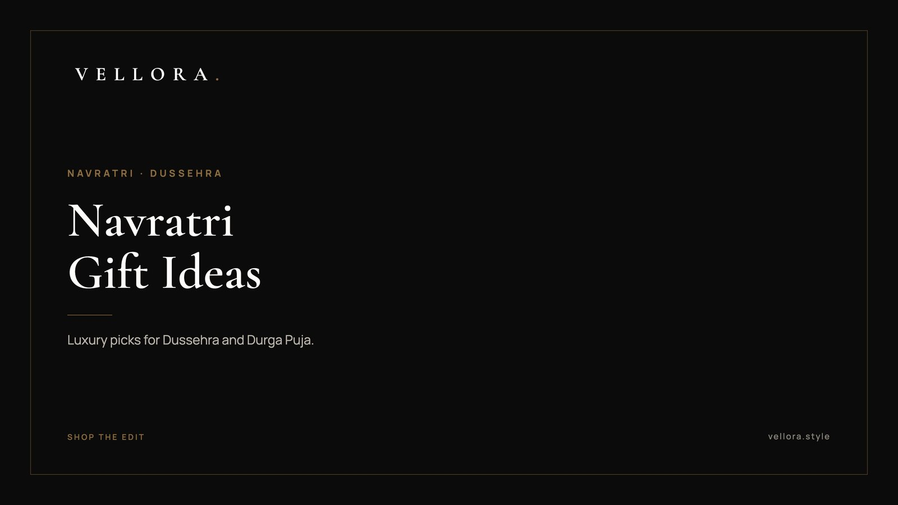

THE FESTIVE EDIT
Navratri Gift Ideas 2026: Luxury Picks for Dussehra and Durga Puja
By Vansh Shah, Founder

- Choose a piece she will still use in December, not one that only works for nine evenings.
- Small bags and crossbody shapes suit garba nights, temple visits and long pandal evenings.
- A watch is the family gift that sees the most daily wear.
- For Dussehra client gifting, one considered piece reads better than a crowded hamper.
- Every piece below is one we carry, described plainly.
The best navratri gift ideas start with how the festival is actually spent. Nine nights of puja, garba, family dinners and visits, then Dussehra. So the navratri gift ideas that work are pieces that move well with all of it: a small bag that holds a phone and keys, a watch that reads clearly at a glance, an accessory she will still reach for long after the lights come down.
We kept this edit short. Ten navratri gift ideas for women and for families, drawn only from what we carry at Vellora. Each one earns its place for a reason, and we say what that reason is. If you are shopping for several people, the table further down matches each piece to the person. And if your navratri gift ideas list includes clients, the Dussehra section at the end is for you.
How we chose these ten
We looked for three things. A piece had to suit festive dressing without depending on it. It had to work on an ordinary weekday afterward. And it had to make sense for the person receiving it, not just look good in a box.
Many families dress to a color for each of the nine days. That pushed us toward neutrals and soft tones that sit comfortably under any of them. It also kept us away from anything too loud. Most of the navratri gift ideas we see go wrong by trying to match the festival. A gift that matches the person tends to last longer.
Ten luxury picks for women and families
1. A top handle bag in a quiet color
The Jacquemus Top Handle Handbag comes in a long list of colors, from black and tan to burgundy, pink and white. Pick the one closest to her everyday wardrobe. It carries well by hand at a dinner and sits neatly on a lap during an evening puja.

2. An ivory quilted chain bag
Ivory is the safest festive neutral there is. It works with deep reds, saffron and bright greens alike. The Gucci Ivory Quilted Chain Shoulder Bag has a chain strap that dresses up a simple kurta and a quilted surface that looks considered up close.
3. A round crossbody for garba nights
Garba asks for both hands. A crossbody keeps the essentials close between rounds. The Gucci Round GG Crossbody comes in ivory, silver and black. Silver reads festive without trying too hard.
4. A mini bag for the evening
For the aarti and the dinner after, she needs very little: a phone, a lipstick, a few notes for the temple. The Dior Pink Mini Bag holds exactly that. Pink is a natural fit for a festive month and still looks right in spring.

5. A slim shoulder bag she will use all year
Some of the best gifts are the least seasonal. The Kate Spade Slim Shoulder Bag comes in eight colors, including black, tan, olive and white. It is the bag she takes to work in November, which is the point. A slim shape also fits under a dupatta without bunching, and it is light enough to carry through a long evening.
6. A camera bag for a daughter or niece
The Gucci GG Horsebit Camera Bag in beige and brown is compact and easy to wear across the body. It suits a younger woman who goes from college to a family function in the same day. The horsebit detail gives it some character without making it the loudest thing in the room.
7. A roomy tote for the family outings
Festive days mean carrying for everyone. A shawl, water, a box of sweets, the things children hand over. The Louis Vuitton OnTheGo MM is a tote that takes all of it and still looks composed at a relative's door.
8. A gold dress watch for a parent
The 1908, Reference 52508, is a 39 mm watch in 18 ct yellow gold with a polished finish. A gold dress watch is a gift for a milestone: a parent's anniversary, a first Navratri after a wedding. It is quiet on the wrist and formal enough for any puja.
9. A solar watch for someone who hates fuss
Solar watches charge from light, so there is no regular battery swap to remember. The Seiko Prospex Circuit Race Solar suits a father, husband or brother who wears one watch every day and wants it to simply keep going.

10. A clean sneaker for the long days
Navratri days are long and mostly on foot. The LV Trainer Sneaker in Marine is a good gift for a son or husband who spends the daytime driving between homes and the evenings out. Shoes come off at the temple door, so it should be easy to slip on and off.
Durga Puja gift ideas that travel well
In Bengal and many other places, the last days of Navratri are Durga Puja, and the evenings are spent moving from pandal to pandal. Good durga puja gift ideas follow that rhythm. A crossbody beats a tote. A watch she can read in a crowd beats a delicate one. Comfortable shoes matter more than anyone admits.
From the list above, the round crossbody, the mini bag and the camera bag are our durga puja gift ideas of choice. All three keep both hands free and sit close to the body in a crowd.
The best luxury accessories for women, matched to the person
If you are buying for more than one person, this is the shortcut. Read across from the person to the piece.
| Who it is for | Piece to consider | Why it suits |
|---|---|---|
| Wife or sister who loves dressing up | Ivory quilted chain bag | A neutral that sits under any color of the day |
| Daughter or niece | Camera bag or round crossbody | Compact, worn across the body |
| Mother who carries for the family | Roomy tote | Holds everything, still looks composed |
| Parent marking a milestone | Gold dress watch | Formal, quiet, worn for years |
| Father or brother | Solar watch | Charges from light, no fuss |
| Son or husband on his feet all day | Clean leather sneaker | Comfortable for long, mixed days |
You can see every piece in the table in the full Vellora bag edit, or read our longer guide to the best luxury bags for women if she is particular about shape and leather.
Dussehra gift ideas for clients
Dussehra falls on Tuesday 20 October this year. Many businesses treat Vijayadashami as an auspicious day to begin new work, which makes it a natural moment to thank clients and partners. Good vijayadashami gift ideas for business are simple: one well-made piece, chosen for the person, sent without a heavy logo.
Our dussehra gift ideas for clients follow the same rules as the rest of this list:
- A solar watch for a client who values things that just work.
- A structured leather bag for a senior partner who travels often.
- Keep the note short and personal. The gift carries the rest.
If you are gifting at volume, start with our page on luxury corporate gifts in India, which explains how we work with businesses on festive orders.
We, the Vellora team, would rather you send one thing that gets used than five that get stored.